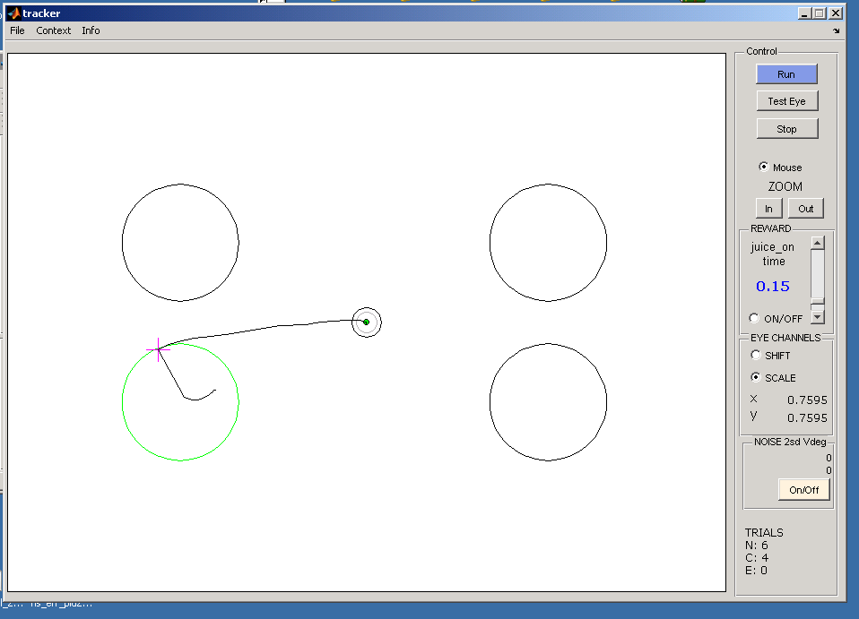
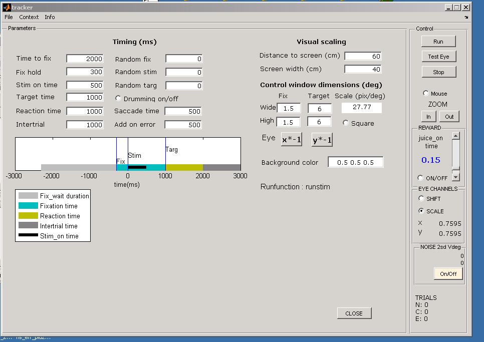
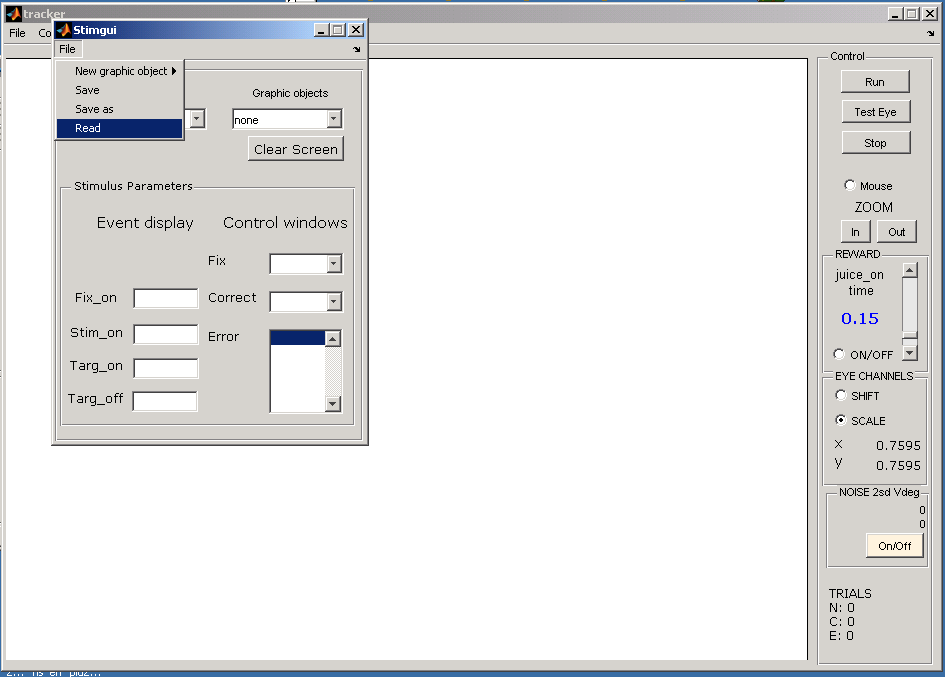
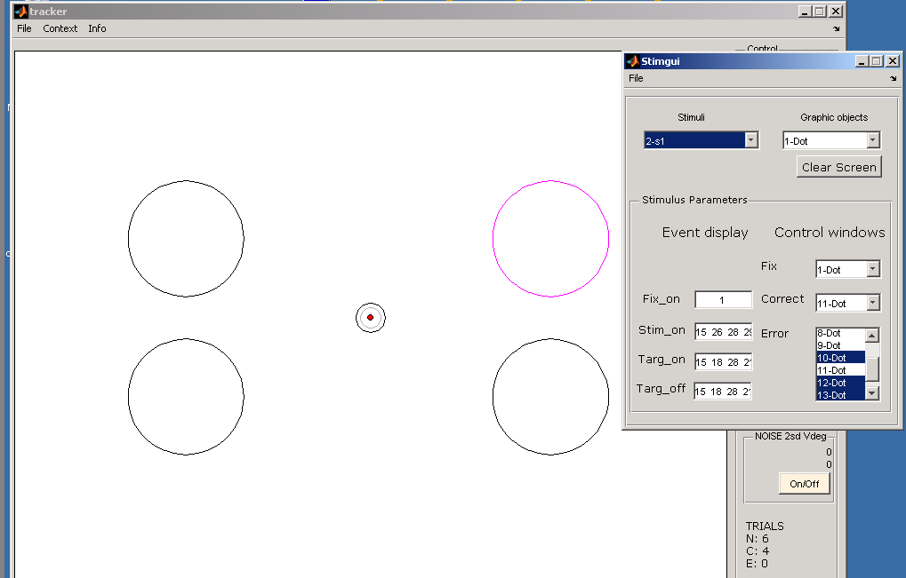
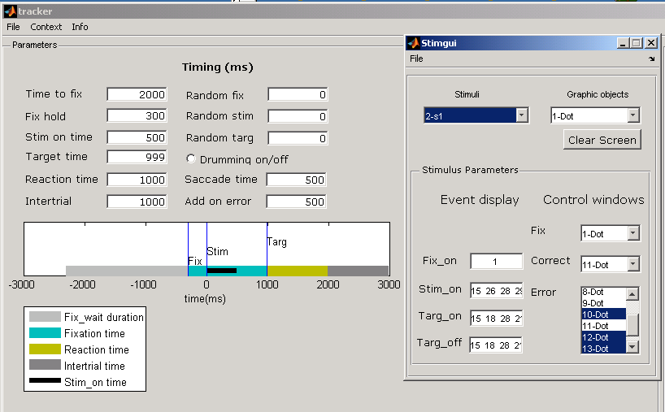
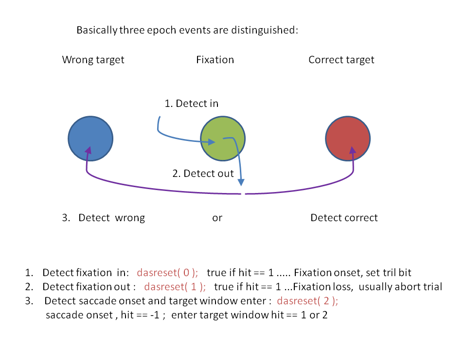

Chris van der Togt, 01-03-2012
Tracker is a matlab program for visual experiments in which it is necessary to follow the eyemovements of a subject and detect behavioural responses. It consists of a small number of scripts that are called through a Graphical user interface (GUI). One of these scripts the runstim function is the central procedure in which every thing comes together and can be adapted to the requirements of the experimenter.
Within the scripts functions are called from two external libraries;
Cogent: a library of functions to present stimuli on a test screen. Details on how to use this library can be found in the cogent documentation under the CogGph\Doc directory.
Dascontrol: a library of functions to follow eye position, to test whether the eye position is inside or outside of defined areas on the screen, and detect the onset timing of these events. These libraries are extensions to matlab and compiled from C code to mex functions. See below for details.
The main function of the GUI interface of tracker is to be able to follow the eye movements of the subject and manipulate all parameters. It has been built using GUIDE an toolbox for making GUI interfaces and is standard matlab script.

Once tracker has initialized the following basic functions can be used:
In the control screen for following eye movements, the experiment is set to a running mode by pressing Run on the right hand side control interface. This runs the runstim matlab mfile. Set to pause mode by pressing stop.
Test the eye channel input without showing stimuli and running the experiment by pressing Test Eye.
The eye position can also be emulated with the mouse. (Set the radio button next to Mouse on, click on the central display and move the mouse while in Run mode. After clicking on the central display the keyboard is also activated and tracker responds to key presses.
The Z key sets the offset of the eye channel input to zero, which corresponds to the centre of the display. The eye signal position immediately shifts to the centre. This is used to update the offset of the eye input when the subject fixates in the middle of the screen.
If the SHIFT radio button is selected the eye position offset can also be changed with small amounts with the arrow keys in the direction of the key pressed. This is important to adjust the offset of the eye channels when the subject fixates but the eye position has a small offset.
If the SCALE radio button is selected the scale of the eye signals is increased of decreased by pressing the up and down arrow keys.
The amount of Reward the subject gets can also be varied by moving the slider up and down. The time that the juice valve is open will be shown on the left.
At the bottom of the right hand side control interface are two additional boxes that display the Noise on the eye channels during fixation and a box showing the numbers of trials where the subject started to fixate, the number that were correct, and the number that were incorrect. The difference between total number and correct + error is equal to the number of aborted trials.
When you call tracker, it will automatically initialise the cogent and DasControl library, and set all parameters to their default values. It does this by first calling the prestim mfile. In this script a global structure is initialised called Par that is used throughout tracker and it's subroutines. If you want to see what is in this structure, type < global Par > in the matlab command window. When cogent initialises it opens a display window for presenting your stimuli on a secondary screen, in the matlab command window the screen dimensions in pixels and the refresh rate are shown for the cogent display window.
Before setting tracker to run mode, you need to load your stimuli and set experiment specific parameters. To read in parameters press File ->Read parameters. Select the appropriate file, this is usually a par.mat file or a mat file with a self chosen name after saving parameters (Save parameters) from a previous session. Before running the experiment the parameters can be changed by pressing File -> Change parameters

Two sets of parameters are shown; Timing parameters and Visual Scaling parameters.
Visual scaling
The distance to the screen, screen width, and pixel dimensions of the screen determine the number of pixels per degree with respect to the subjects eye. These numbers are important to define the size and position of visual stimuli in visual degrees. The screen pixel dimensions are determined when the stimulus display screen is initialised by cogent and therefore these values are retrieved through a cogent function and cannot be edited. If these numbers are correct the control window dimensions can be set in visual degrees. The fix window and target window dimensions can be set separately. n.b. See below for function of control windows. Next to Eye the sign of the the eyechannel input can be changed. When you notice that the subject makes eyemovements to the opposite side of the screen to where a saccade should be made, this usually means one or both channels have an incorrect sign. Adjust the sign by pressing the buttons. Background color is just the default background color during and between stimulus presentations. Values should be between 0 and 1, for Red, Green and Blue resp.
Timing
In a stimulus procedure different intervals are defined that correspond to the subsequent presentation of stimuli and the behaviour of the subject (which is based on eye position). To account for this a series of event periods are defined and their values are editable. Below the user interfaces the same periods are displayed in a time graph. In the most simple protocol, the program defines five periods;
1. A time to start fixating period (fix_wait duration); the program waits until the subjects eyes enter the fixation window. This is when the fixation dot is presented.
2. Fix hold, subject fixates, only fixation dot is presented. Now the program starts checking whether the eyes stay within the fixation control window, a circle in the middle of the screen with a red dot at it's center.
3. A Stimulus presentation period in which stimuli are presented but the subject must maintain fixation. If the target time is equal to the stimulus on time this is immediately followed by the reaction time.
4. Reaction time period; If the target window is not the same as the fixation window, the subject must make an eye movement to the target within the reaction time period. The program will now detect that the eyes leave the fixation window (= saccade onset) and detect that they enter a target window.
5. Inter trial period. defines a pause time between stimulus trials.
In addition to these periods, the following time variables are defined.
Randomness to the predefined periods can be added (value editors on the right).
Drumming is for repeating trials on which the subject made errors.
Saccade time defines the limit to the length of time that a saccade may take. Once the subject's eyes leave the fixation window they are required to enter a target window within this specified time otherwise the trial is aborted.
Error time, a period of time that is added to a trial when a subject makes an error. Basically a sort of punishment for making an error.
Load stimuli by pressing Context -> StimGui -> File -> Read . StimGui is a separate graphical user interface specifically made to load and make stimulus object files.It can also be run separately from tracker. This is handy when you want to make stimuli on another computer which does not have an AD card (DasControl does not work) but you can use cogent.

With StimGui, visual objects are defined which can be grouped and ordered in time to define separate stimulus conditions. The right hand side of StimGui shows a list of graphical objects when you press on the small arrow. The left hand side shows a list of stimulus conditions. The Graphical objects (dot, box, bezier, bitmap) have an id number which is the number on the left of each item. These numbers are used to refer to them in the stimulus condition setup.

In the lower part of the StimGui is a box with an Event display list and a control window list. When you click on one of the stimulus conditions under stimuli, these edit boxes are filled with the references to the visual objects associated with this stimulus.
As mentioned earlier, an experimental procedure consists of a series of intervals in which different sets of graphical objects should be presented to a subject. Here Fix-on, Stim-on, Targ-on and Targ-off are defined. In each edit box a list of numbers can be entered corresponding to the id's of the graphical objects that should be presented in that event interval. n.b. If some graphical object should be plotted on top of others the order of the numbers is important. Objects are plotted in the order listed.
Graphical objects are also used as place holders for control windows, even if you do not plan to display them. This is only for objects with a centre x, and centre y position. In an experiment three types of control windows are defined; Fix , Correct and Error windows. Usually a subject first has to fixate on a colored dot (red) for a certain time including the presentation of a stimulus. Following the presentation of the stimulus, the subject may be required to make an eye movement to one of several possible targets. Only one can be correct, and there can be multiple other targets that are incorrect. The control windows are plotted in the eye movement display window within the main control window of tracker. The fixation window has a red dot in the middle, the target window is a magenta circle, the error windows are black circles. When the subject is cued to make an eye movement, the fixation dot and the correct target window become green. Of course this is not what the subject sees, only the experimenter.
In StimGui, with the edit boxes on the right (Control windows), a fix object, a correct object and error target objects can be selected. n.b.The selection of graphical objects for the different events and for the control windows has to be done for each separate stimulus condition.
This figure illustrates the correspondence between the events in StimGui and Tracker.

The stimulus defined in Fix-on in StimGui is presented at the start of the left gray bar, that is before the subject starts to fixate. The thin black bar shows the stim on time period. The start of this period corresponds with the presentation of the objects entered in stim-on in StimGui. When this period ends this corresponds with the presentation of objects defined in targ-on in StimGui (I will add a vertical line at the end of the stim period to indicate targ-on). The vertical line with targ in tracker is the onset of the reaction time period (green bar) and it's onset corresponds with the presentation of visual objects defined in targ-off in StimGui. Note that the cyan bar indicates the whole period that the subject should fixate, however this groups three periods together; the fix hold, the stim on and the target time.
When you are finished with tracker, it should be properly shut down by pressing File->Exit. Only then variables ar properly cleared and this prevents matlab from crashing if you call tracker a second time. As tracker closes down it calls poststim to clear all variables.
An advantage of using tracker is that the runstim, which is the actual function controlling subsequent events and their timing, is a script file that can easily be adapted to any weird protocol someone might like to use. This includes the possibility to define your own visual stimuli in any way you prefer. That also means you do not have to use StimGui if it does not meet your requirements. To do this the runstim mfile has to be copied to another location and edited. Once it is adapted you can use it in tracker by changing the matlab working directory to the directory containing your run function and pressing; Context -> NewRunfunction . To select your runstim function. This will tell tracker to use this function instead of the default one.
Here is the basic runstim provided with tracker; Runstim
%@@ Lines enclosed by these flags in runstim are all associated with StimGui generated stimuli and can be excluded if necessary %@@
But if you provide you own stimuli, you will also have to provide you own control windows, including position and dimensions. This is done by calling dassetwindow after initialising the WIN structure on each trial.
The WIN structure should be initialised as an array with the following values for each window (circle or box);
(cx : center x, cy : center y; height, width, control window type ) either F : fix (0), T : target(2), or A : alternative (1)
and should include at a minimum a fix and a target window.
%control window setup in runstim WIN = [ F_cx, F_cy, F_height, F_width, 0; ... %Fix window (in pixels), ONLY one!!!! T_cx, T_cy, T_height, T_width, 2 ]; %Targ window ONLY one!!!! Par.OFFx = F_cx; %fixation offset Par.OFFy = F_cy; WIN = [ WIN; ... A_cx, A_cy, A_height, A_width, 1 ]; %Talt or error windows, can be more than one WIN = WIN'; %column wise arrangement of values for each window. NumWins = size(WIN, 2); dassetwindow( NumWins, WIN(:), Par.Bsqr, Par.SCx*Par.xdir, Par.SCy*Par.ydir ) %third parameter is bool; square (1) or ellipse (0)
The Par.OFFx and OFFy are necessary to tell tracker where the fixation window is, so it is also positioned appropriately within the tracker control window display.
The dassetwindow function uses the WIN structure to set DasControl global variables necessary for estimating eye position relative to the control windows. Note that you must provide the values in pixels. The third parameter determines whether the control windows are round or square. The fourth and fifth parameter in dassetwindow are for scaling the eye channels, which are updated in the tracker user interface and retrieved from the Par structure. This should basically get everything working.
To understand further how to manipulate the runstim and debug it, it may be necessary to understand the das control functions. The DasControl library contains functions necessary to access a Measurement and Computing® PCIDAS1602 card for analog input of the eye channels and output of digital events to a neurophysiological recording system. It has been coded in C++ and the functions are exported in a DLL. To access these functions from matlab, the exported functions are wrapped in mexfile routines listed below.
The DasControl library initializes analog digital conversion on 2 - 8 channels at 1000Hz per channel. After initialization it automatically checks if eye signal is in or out of a control window based on the initialization of the control windows ( dassetwindow) and reset parameters (dasreset ).
Initializing and closing
LPStat = dasinit( boardnumber, number of channels ); initialises the dascard and sets the number of channels to sample.
LPStat is a global value within the DasControl library and is cleared when the library is closed. Should also be cleared from Matlab global memory when tracker is closed.
LPStat(1) = time (ms) passed since last reset
LPStat(2) = control window hit (1 : in or out, 2 : in correct target window)
LPStat.(3) = hit position x
LPStat(4) = hit postion y
LPStat(5) = reaction time
LPStat(6) = time saccade length
dasclose(); closes the das library
Output
dasanalogout( volt ); output of voltage on first analog output channel (not used in tracker)
dasjuice( volt ); output of voltage on second analog output channel, used for reward system
dasbit( channel, 1 or 0); sets bit on or off.
Possible channels to set bits on, how they are interpreted by the TDT system software and used in tracker; (names are self explanatory)
Par.ErrorB = 0;
Par.StimB = 1;
Par.TargetB = 2;
Par.RewardB = 3;
%Par.SaccadeB = 4; done by DasControl
%Par.TrialB = 5; done by DasControl
Par.MicroB = 6;
Par.CorrectB = 7;
dasclearword(); clears the 16 bit output port, actually one 8bit port B and two 4bit ports CL and CH.
dasword( condition ) ; sets port B, CL and CH. ; Used to log condition number in TDT system.
Input
pos = dasgetcursorpos(); gets mouse coordinates on screen. used when emulating eye movement with mouse
Pos,xy = dasgeteye(); gets average eye position over last 5 ms, used to plot eye movement in main control window of tracker.
level = dasgetlevel(); gets momentary level on extra analog input channels. If you use another input device, e.g. manual button press
dassetnoise( 1 or 0); set noise sampling on or off.
averagenoise = dasgetnoise(); 2* standard error from moving average (20smpls) of variance on eye channels during fixation.
eyetrace = dasgettrace(); eye trace over the last 1024 ms. Also retrieve LPStat(0) for time of last sample in buffer.
Set parameters, run acquisition
daszero(); set offset to point where fix window should be.
dasoffset( shiftx, shifty); shift offset of eye channel by this amount.
dasreset( in ) ; input 0, 1, 2 (see figure below)
dassetwindow( NumWins, WIN(:), Bsqr, xSc, ySc ) ; takes updated WIN structure as input, including boolean if control windows are square : 1 or are round : 0, and scaling of eye channel iput in x and y direction.
dasrun( ms ); ms = number of samples to do eye control window checking. The sampling rate of the AD card is at 1000Hz. If the function detects a hit, based on condition set in dasreset, the function immediately returns. So this function cannot be used as a timer.
daspause(ms) ; does not return if a hit has been detected. Can be used to time a fixed pause.
Miscellaneous
dasusemouse( 1 or 0); use mouse to emulate eye movement or turn off.
daspulse( Rep, Intvl); output Rep number pulses with Intvl ms between each pulse. Output TTLs on 7th digital channel (Microstim)
